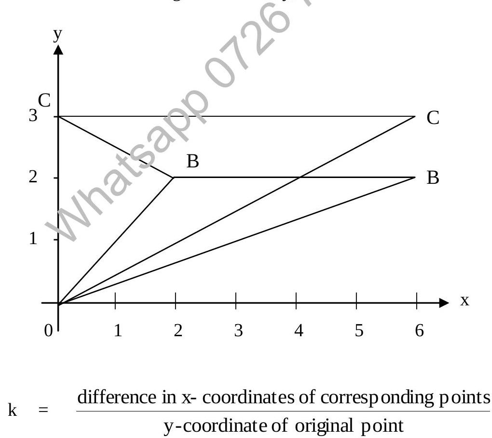
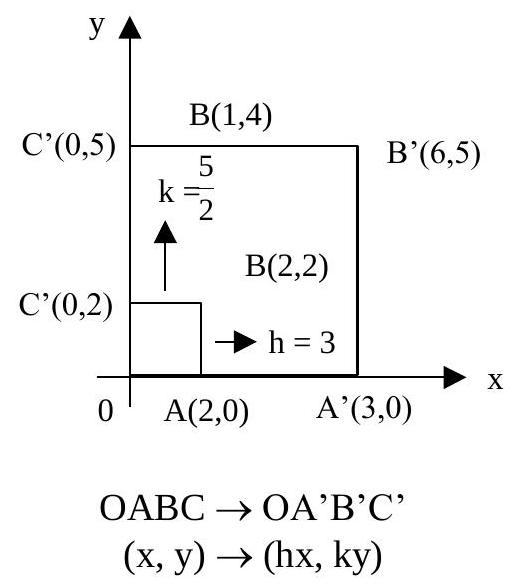

Chapter 9: Matrices And Transformations (Continued)
9.5 Transformations (Continued)
9.5.5 Shearing (H)
A shear parallel to the x-axis is a transformation which moves a point (x, y) parallel to the x-axis through a distance ky, where k is the shear factor.
Triangle OBC is mapped onto Triangle OB'C' under a shear along the x-axis with factor k.
$$ k = \frac{\text{distance moved parallel to x-axis}}{\text{y-coordinate}} = \frac{CC''}{OC} = \frac{6}{3} = 2 $$
A shear parallel to the y-axis is a transformation which moves a point (x, y) parallel to the y-axis through a distance kx where k is the shear factor.
$$ k = \frac{\text{distance moved parallel to y-axis}}{\text{x-coordinate}} $$
9.5.6 Stretching (S)
One-way stretch.
- A stretch parallel to the x-axis is a transformation which moves a point (x, y) parallel to the x-axis, such that its new x-coordinate is kx, where k is the stretch factor. The y-coordinate remains unchanged.
- A stretch parallel to the y-axis is a transformation which moves a point (x, y) parallel to the y-axis such that its new y-coordinate is ky, where k is the stretch factor. The x-coordinate remains unchanged.
- In the case of stretching parallel to the x-axis, the invariant line is the y-axis (x=0).
- In the case of stretching parallel to the y-axis, the invariant line is the x-axis (y=0).
Two Way Stretch
If a figure is stretched parallel to the x-axis as well as parallel to the y-axis, then the stretch is called a two-way stretch.
Under a two-way stretch with h and k as constants of stretch parallel to the x-axis and y-axis respectively a point (x, y) is mapped onto (hx, ky).
